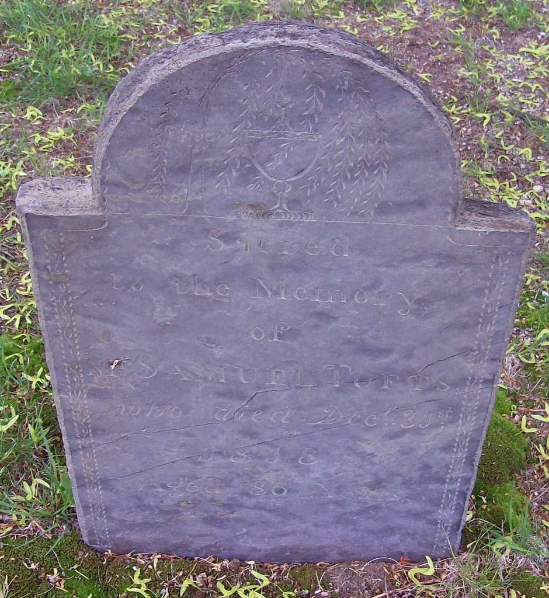

Biography
Samuel Tufts was 42 when Paul Revere’s alarm reached Medford, and he answered it. He later sat on the town’s Committee of Safety, and he was the father of Revolutionary soldiers Samuel 3rd and Caleb.
Service Record
Town: Medford · Dates: 1732 – 1818
Born 16 Aug. 1732 in Medford; died 31 Dec. 1818; married Hannah Tufts (36-6). (Tufts Kinsmen, Vol. I, p. 119, family no. 15-3)
Answered Paul Revere’s call to bear arms at the Lexington alarm; served on the Committee of Safety; head of household 1790–1810. (Tufts Kinsmen, Vol. I, p. 119, family no. 15-3)
Family Connection
Family number 15-3 in Tufts Kinsmen, Vol. I. Parents are not named in the extract seen.
Relatives with profiles on this site: brother Capt. Joseph Tufts Jr. (1731–1778) ; son Caleb Tufts (1762–1852)
; son Caleb Tufts (1762–1852) .
.
Spouse(s)
- Hannah Tufts (d. 1795, aged 60). Married April 14, 1757.
“Samuel Tufts , who d. Dec. 31, 1818, m. Hannah Tufts , Apr. 14, 1757, who d. Mar. 13, 1795, aged 60”
Charles Brooks, History of the Town of Medford (1855), Register of Families, p. 546. Page scan · Text (Perseus)
Authoritative IDs / Index Numbers
| Source | ID / status |
|---|---|
| Perseus person index (auth=) | auth=tufts,samuel. This is a name-level key shared by every Samuel Tufts in Perseus, not a personal ID. Use it with the passages cited on this page. |
| Find a Grave memorial | 26920548 (dates and family checked) |
| Brooks, History of Medford (1855) register no. | No. 62; family 23-56 (see Spouse note), p. 545–546 |
| Tufts Kinsmen, Vol. I family no. | 15-3 |
| Mass. Soldiers and Sailors | Not yet checked for this page |
| DAR ancestor no. | Note: Pending further work. |
| FamilySearch ID | Note: Pending further work. |
| Geni profile | Note: Pending further work. |
| WikiTree ID | Note: Pending further work. |
| Town / vital records | Brooks’s register (above) is drawn from Medford town and church records; printed VR volume and page not yet checked |
Only IDs confirmed against dates and family are given as matches. “Not yet checked” means the source has not been searched; “Checked, not found” means it was searched without a match.
⚑ Unverified
Clean match to Wild, p. 53 (“Son of Joseph and Lydia (Francis); born Aug. 16, 1732; married Hannah Tufts; died 1818”). See also Samuel Tufts (several men). No other source on this site has yet been checked for this man.
Pictures


Find a Grave
Find a Grave memorial 26920548. As given there (secondary; not checked against original records): “Samuel Tufts Sr.” Born 16 Aug 1732, Medford; died 31 Dec 1818, aged 86, Medford. Salem Street Burying Ground, plot 107; SAR marker. Parents Joseph (1704–1758) and Lydia Francis; wife Hannah Tufts (m. 1757).


Business
A man of this name appears in Brooks’s History of Medford in connection with the brickyards. Whether it is this man is Unverified. See Businesses.
In the Newspapers
In May 1776 The Boston Gazette (p. 4) advertised soldiers’ guns left “at Mr. Samuel Tufts’s house in Medford.” Which Samuel Tufts this was is Unverified.
See Collections.
Links and Resources
Every source, record, map, survey, marker and artifact tied to this person, gathered in one place. Page numbers are given where a book is cited.
Maps, Surveys and Artifacts
- — The Battle of Lexington, April 19, 1775 (Doolittle, Plate I). A period illustration: detail of Amos Doolittle’s 1775 engraving, made after Ralph Earl. It shows the event, not any particular Tufts. Ima
- Source: Wikimedia Commons — …April 19, 1775 (Doolittle, Plate I). A period illustration: detail of Amos Doolittle’s 1775 engraving, made after Ralph Earl. It shows the event, not any particular Tufts.Image: Amos Doolittle after Ralph Earl. Public domain.
- — Gravestone of Samuel Tufts, Salem Street Burying Ground, Medford. The stone reads “Sacred to the Memory of Samuel Tufts who died Dec 31 1818 Aged 86.” Photo: BobBoston, Find a Grave
- Collections — See Collections .
Graves and Memorials
- Find a Grave memorial · 26920548
Markers, Plaques and Places
- Businesses — A man of this name appears in Brooks’s History of Medford in connection with the brickyards. Whether it is this man is Unverified.
Digitized Books and Journals
- Charles Brooks, History of the Town of Medford (1855), Register of Families, p. 546. · Page scan
- Charles Brooks, History of the Town of Medford (1855), Register of Families, p. 546. · Text (Perseus)